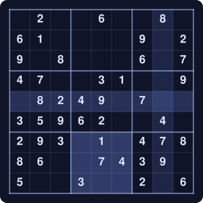
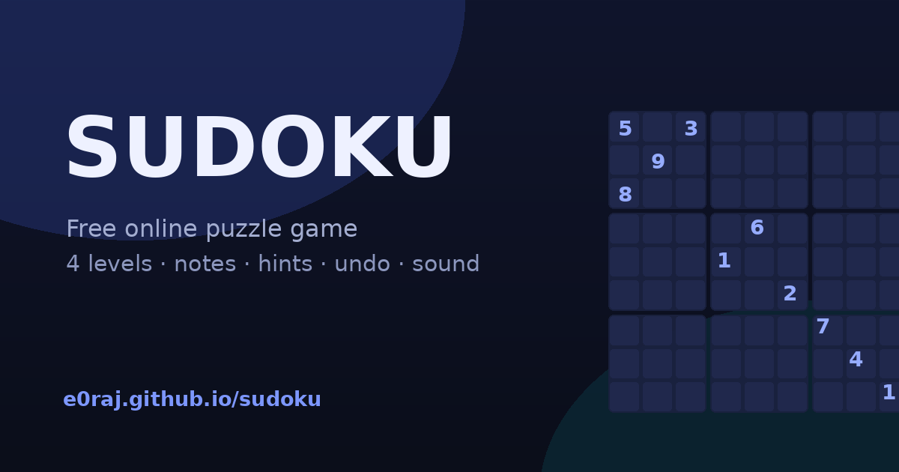

About Sudoku
Sudoku is a logic puzzle played on a 9×9 grid. The grid is divided into nine 3×3 blocks, and a few cells start out filled with digits. The task is to finish the grid so that every row, every column and every 3×3 block contains the digits 1 to 9 exactly once. There is no arithmetic in it — nothing is added or multiplied. Every move is pure deduction: this digit cannot go here, therefore it must go there.

A short history
The modern puzzle was designed by Howard Garns, a retired architect from Indianapolis, and first published by Dell Magazines in 1979 under the name “Number Place”. It crossed to Japan in 1984, where the publisher Nikoli called it Sūji wa dokushin ni kagiru — roughly “the digits must stay single” — which readers shortened to Sudoku. The name and the format went global in 2004–05, when Wayne Gould, a retired Hong Kong judge, persuaded The Times to print a daily puzzle. Within a year it was in newspapers in dozens of countries, and it has stayed there since.
What playing it does for you
- Attention. A single grid holds your focus for ten to thirty minutes with nothing to scroll — rare on a phone.
- Logical reasoning. Every placement is a small if–then argument. Doing that repeatedly builds a habit of checking consequences before acting.
- Pattern spotting. Naked singles, hidden singles, pointing pairs: the more grids you solve, the faster you notice the shapes.
- Working memory. Holding candidate digits in your head while scanning a row is light exercise for short-term memory.
- A calm, finite task. Unlike a feed, the puzzle ends. Finishing something small and complete is a genuinely pleasant way to wind down.
- It costs nothing. No equipment, no account, no network once the page has loaded.
People often say puzzles keep the mind sharp. The honest answer is that the evidence is mixed: mentally active people do tend to stay sharper, but it is hard to show that the puzzles themselves are the cause. Treat Sudoku as a good habit, not a medical one.
Who built this, and why
This game was designed and built by Raj. The reason was simple: most free Sudoku pages are buried under ads, pop-ups and account prompts. This one is a single page of plain HTML, CSS and JavaScript — no framework, no build step, no trackers, nothing to sign up for. Each puzzle is generated from scratch in the browser and clues are removed only while exactly one solution remains, so guessing is never needed. Sound effects are synthesised live with the Web Audio API, so no audio files are downloaded, and the game keeps working offline once it has loaded.
